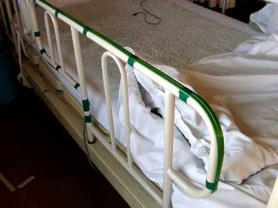
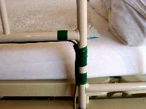

かならずお読みください→
テープスイッチ離床センサ

テープスイッチはテープスイッチジャパン株式会社の商品です．
こちらで紹介しております，月ヶ瀬離床センサは，２０００年春から使い始めて以降，当院において転倒事故防止に大いに役に立っています．しかし，これですべての問題が解決できるわけではないことが，徐々にわかって来ました．当院では，ベッドから出るときに，ベッド柵を抜かずに，跨ごうとされる方が，一年に数人程度お見えになります．このような方には，月ヶ瀬離床センサでは対応できない場合が多いようです．
まず，柵の上数センチにひもを張り，これに引っかかると月ヶ瀬離床センサが作動する工夫も試してみました．しかし多くの方は，ひもを意識して（いやがって）ベッド足部，頭部をまたぎ越そうとされるのでかえって危険になることもありました．そこで，ひもを見えにくい細いものに替えると，看護スタッフが引っかかることになりました．またテグス（釣り糸）など細いひもが患者さんにからむと，かなりの危険も予想できるので，この方法は早い段階であきらめました．
次に，人体に蓄えられている静電エネルギ（ハム）を感知する方式のタッチセンサで，ベッド柵上部に張り巡らせた銅線を電極として，ベッド柵にさわったらナースコールが動作させる試みをしました．しかし，電極が大きいためか，周囲の医療機器との関係か理由が明らかではありませんが，病室によって感度調整が困難な場合が多くありました．また皮膚が乾燥している人では，タッチセンサの動作自体が不安定になることが多くありました．
また，電源など道具立てが複雑になり取り扱いが面倒になる点も，病棟では問題になりやすい点でした．これらの問題を解決するためには，もっと単純な原理のスイッチが必要です．そこでテープスイッチを利用した離床センサを作りましたので，ご紹介いたします．
テープスイッチは，元々工場設備の事故（労働災害）対策ツールとして広く使われてきましたが，最近では防犯などセキュリティー関連，介護福祉用としても応用が広がりつつあるようです．汎用品ですから，注文の際に長さを指定することもできます．
詳しくは，テープスイッチジャパン株式会社のサイトや株式会社東京センサのサイトを参照してください．
材料
今回使用したのは，テープスイッチジャパン社の１２１−ＢＰ（２線式，１．２ｍ，リード線標準．参考価格約２３００円）です．選定の理由は，最小曲げ半径が１２ｍｍと小さいことです．また動作力が２Ｎ（約２００グラム）は，寝具などがかかっても動作せず，ベッド柵に手をかけると動作する程良い大きさです．
電線４ｍ（当院の場合，４ｍあれば，ベッド全体に届きます．特殊なレイアウトの病室で使用する場合には，現場での確認が必要でしょう）病棟では，看護師が引っかけるほかに，ベッドの移動に際して，キャスタで踏みつぶす，電動ベッドで引きちぎるなど，電線は厳しい状況にあります．電気容量だけでなく，この点も留意して，丈夫な電線を用意する必要があります．ホームセンターなどで５０円／ｍ位で購入できます．
ナースコールのコネクタ
当院では，ナースコールや離床センサ関係のスイッチのコネクターはすべて統一しています．詳しくはこちらをご覧ください．これによって，たとえば月ヶ瀬離床センサと今回のテープスイッチ型離床センサとロッド型ナースコールスイッチを同じ方に同時に提供できます．このように関連資材の有効利用を図っています．工具
はんだ付け道具一式
その他，ニッパ，カッターナイフなど
組み立て
購入したテープスイッチのリード線を延長し，端にコネクタをハンダつけします．テープスイッチの極性は特にありません．（どちらの線をどちらの端子につないでも関係ない）特に注意するべき点は，足で引っかける程度の衝撃に耐えられるように，コネクタの配線挟み込み部分を注意深く組み立てること．そして，ベッド柵やベッドのフットプレート上部に取り付ける際，テープスイッチ本体やハンダつけ部分に衝撃が伝わらないように，配線の要所をインシュロックタイやテープなどで固定します．
注意
テープスイッチは，自動車のタイヤで踏むなどの用途にも使えるので，一見して丈夫なもののように思われますが，折り曲げやねじりで想像するより簡単に壊れることがあります．使用中はもちろん保管方法にも注意が必要です．この離床センサは，外見から断線などの故障を判断するのは困難です．ですから毎日始業時など定期的な点検が必要です．
この離床センサは，床面に貼り付けて，踏むと動作する使い方も出来ます．しかし，つまずき転倒するおそれもありますので，当院では床に貼ることを厳禁しております．
まとめ
ベッド柵をまたぎ越すといっても，ハードル競技のように飛び越えるわけではありません．そこでベッド柵を握り体重を支える動作を検知して，ナースコールを動作させる試みをご紹介しました．写真のようにベッド柵につけるほかに，ベッド頭部（ヘッドプレート）や足部（フットプレート）にも応用が可能と思われます．
多くの場合，月ヶ瀬離床センサとこのテープスイッチ離床センサのどちらを使うべきか迷う場合がほとんどです．当院では，月ヶ瀬離床センサと併用して，成果を上げています．しかし，テープスイッチ離床センサに手をかけている体勢は，すでに事故の数秒前かもしれません．道具に頼りすぎることがないようにご注意ください．
03/05/15 公開研究企画課リハ工学科にもどる